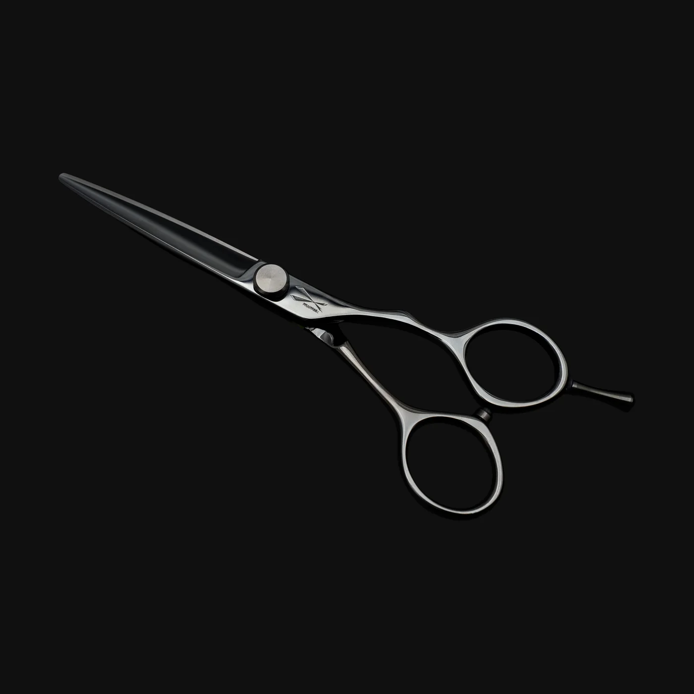
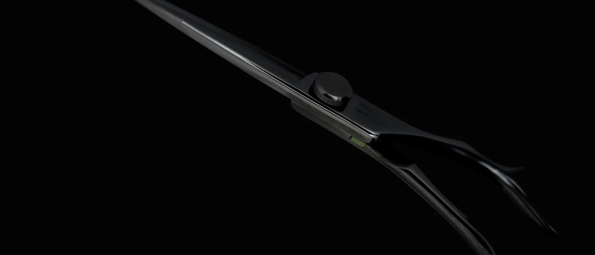
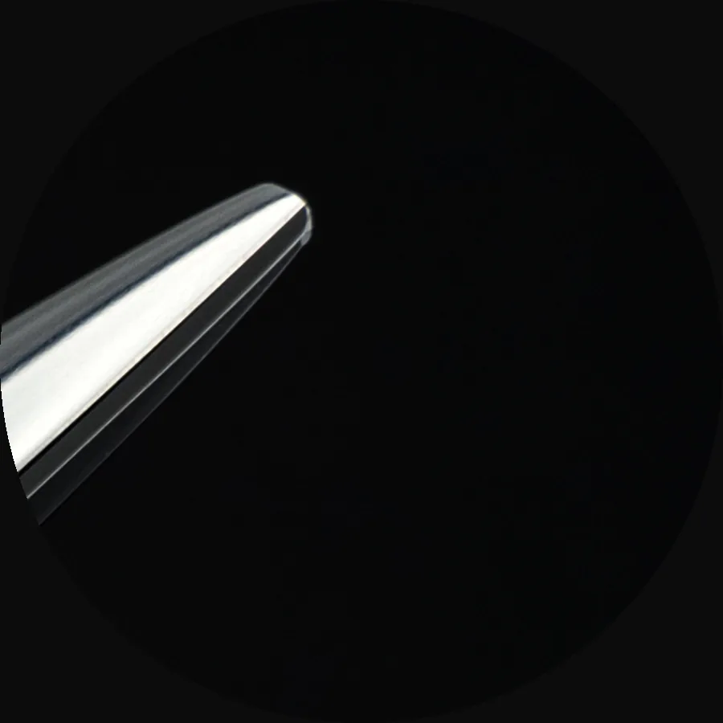
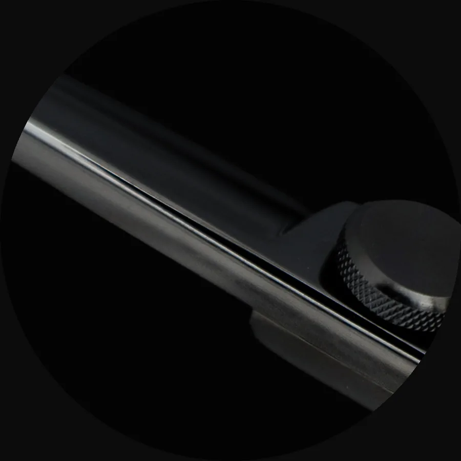
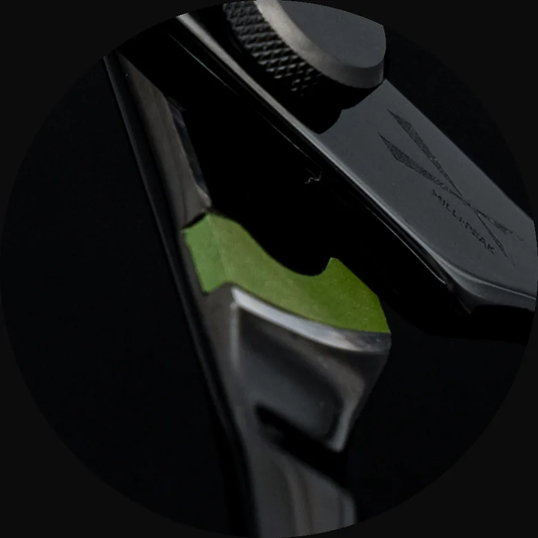
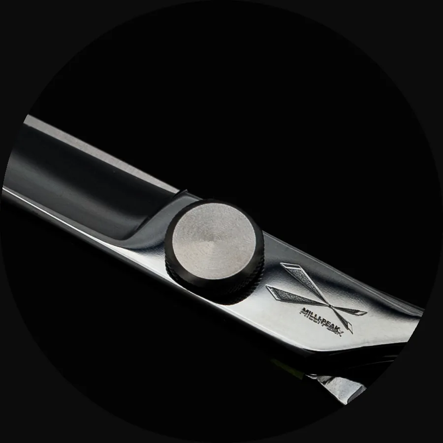
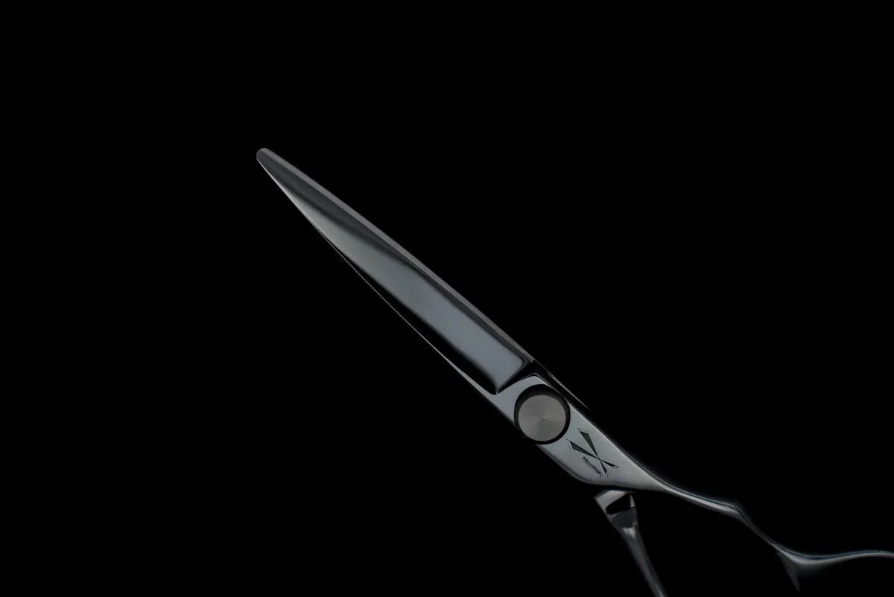
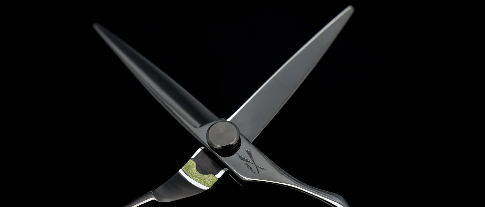
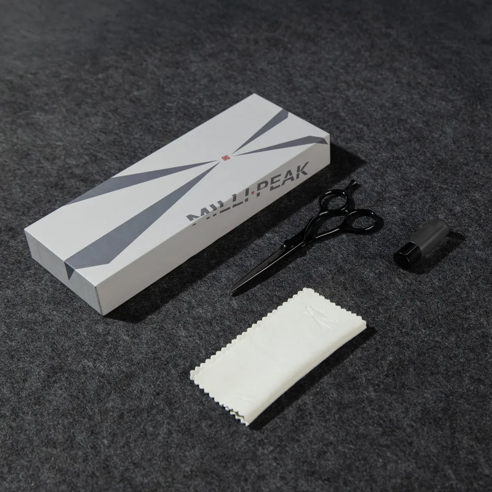

特別給喜歡精準剪裁的設計師。刀越短、離手越近，精準度越高。

當手的延伸。
鍍黑低調；頭端圓弧，貼膚剪裁舒服又安心。
細節 details
把正在講的特點拉近看。
-

頭端圓弧
貼膚剪裁既舒服又安心。
rounded tip
-

平口螺絲
低調不干擾剪裁視線。
flat screw
-

耐磨片
內置磨合，合刀絲滑。
wear plate
-

鍍黑輪廓
低調存在，當手的延伸。
black finish

精準，離手更近
5.25 吋・黑色。刀短、離手近，把精準留給每一次落點。

close to the hand.
把干擾拿掉——平口螺絲、耐磨片、圓頭與鍍黑，都為了手感乾淨。
MP–100S specifications
僅列已確認項目；其餘規格待樣品確認後補上。
型號 model
MP–100S
長度 length
5.25 吋
顏色 color
黑色
用途名 use
精準結構刀
價格 price
NT$4,500
